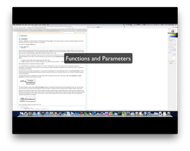
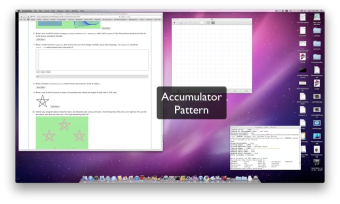

Parte 1: Aula 5 - Valores e operadores booleanos¶
Tópicos¶
- Valores e expressões booleanas
- tipo
bool;- valores booleanos:
TrueeFalse;- operadores lógicos
and,orenot;- expressões lógicas;
indicadores de passagem.
Exercício 5.1¶
Dados um número inteiro n > 0 e as notas finais de n alunos,
determinar quantos alunos ficaram de recuperação. Um aluno está de
recuperação se sua nota fina está entre 3.0 e 5.0 (exclusive)
A nota máxima é 10.0.
Tente escrever a sua solução abaixo primeiro e, depois, clique aqui para ver uma solução.
(aula05_ex51_tentativa)
Exercício 5.2¶
Dados um número inteiro n, n > 0, e uma sequência com
n números reais, verificar se a sequência está em
ordem crescente.
Por exemplo, para a entrada
7 -6 0 12 15 37 101 201
o programa deve imprimir Não está em ordem crescente.
e para a entrada
7 -6 0 17 15 37 101 201
o programa deve imprimir Está em ordem crescente.
(aula05_pr2)
Exercício 5.3¶
Dado um número inteiro n, n > 0, verificar se este
número contém dois dígitos adjacentes iguais.
Por exemplo, para
1234321 a resposta é não e
1234556 a resposta é sim.
(aula05_pr3)
Exercício 5.4¶
Nota: Questão 1 da Prova 1 de 2014.
Na figura, no plano cartesiano, a região sombreada não inclui as
linhas de bordo. Note que o eixo y cai bem no meio da figura,
e usamos o lado do quadrado para indicar as ordenadas
correspondentes.
Escreva na página do desenho um programa que lê as coordenadas
cartesianas (x, y) de um ponto, ambas do tipo float
e imprime dentro se esse ponto está na região, e fora
caso contrário.
Solução 0: começa supondo que está dentro e depois...
A variável dentro e um indicador de passagem bool.
(aula05_pr4_1)
Solução 1: começa supondo que está fora e depois...
A variável dentro e um indicador de passagem bool.
(aula05_pr3_1)
Solução 2: explora a simetria da figura em relação ao eixo y. A variável x_pos pode ser trocada por x. A variável dentro e um indicador de passagem bool.
(aula05_pr3_2)
Solução 3: idêntica a anterior, explora simetria da figura em relação ao eixo
y e utiliza um string para a armazenar resposta.
A variável x_pos pode ser trocada por x.
A variável dentro e um indicador de passagem str
(hmmm, gosto discutível...).
(aula05_pr3_3)
Solução 4: utiliza uma variável bool para indicar em qual quer da figuracada parte da face está o ponto: face, boca olho direito, olho esquerdo, íris do olho direito, íris do olho esquerdo. A condição para decidir se o ponto está ou não na região hachurada pode parecer complicada, mas é bem elegante.
(aula05_pr3_4)
Solução 5: idêntica a anterior, mas explora a simetria como a solução 3.
(aula05_pr3_5)
Aula 06¶
Os possíveis tópicos a serem cobertos nesta aula envolvem são:
- repetições encaixadas
- repetições com indicadores de passagem
Exercício 6.0¶
Nota: Exercício 6 da lista sobre repetições encaixadas.
Aula 07¶
Os possíveis tópicos a serem cobertos nesta aula envolvem funções e são eles:
- passagem de parâmetros;
- variáveis locais;
- documentação: docstring
Declaração de funções:
def "nome da função"("parâmetros"):
'''
Comentários são opcionais, mas são recomendados e devem descrever
o papel dos parâmetros e o que a função faz.
'''
# corpo da função
|
| bloco de comandos
|
Esqueleto de um programa em Python:
# função principal
def main():
'''
Função principal, será a primeira a ser executado e
será a responsável pela chamada de outras funções que
por sua vez podem ou não chamar outras funçoes que
por sua vez ...
'''
# corpo da função main
|
| bloco de comandos
|
# Declaração das funções
def f...
'''
docstring da função f
'''
# corpo da função f
|
| bloco de comandos
|
def g...
'''
docstring da função g
'''
# corpo da função g
|
| bloco de comandos
|
[...]
# início da execução do programa
main() # chamada da função main
Exercício 7.0¶
Escreva uma função fatorial que recebe como parâmetro um número
inteiro k, k >= 0, e retorna k!.
(aula07_pr0_0)
Escreva uma função binomial que recebe como parâmetros número
inteiros m e n, m >= 0 e n >= 0, e retorna o coeficiente
binomial m!/((m-n)!n!).
(aula07_pr0_1)
Escreva um programa que lê um inteiro n, n >= 0 e imprime
os coeficientes da expansão de (x+y) elevado a n.
(aula07_pr0_2)
Exercício 7.1¶
Leitura e vídeos complementares¶
A leitura e vídeos sugeridos aqui, em geral, contém (muito?) mais tópicos do que os que vistos durante a aula. Os tópicos não vistos na aula serão cobertos em algum momento mais oportuno.
Leitura das seções Funções, Funções que retornam valores, e Variáveis e parâmetros são locais, do capítulo Funções do livro interativo Como pensar como um Cientísta da Computação.
Vídeos do curso Python para zumbis de Fernando Masanori:
Vídeo sobre Funções e Parâmetros do livro How to Think Like a Computer Scientist:
Vídeo sobre Padrão de acumulação do livro How to Think Like a Computer Scientist:
Você quer aprender mais sobre Python?
Se você quiser aprender mais sobre como instalar e usar Python, aqui estão alguns links para vídeos: Installing Python for Windows mostra como instalar o Python no ambiente Windows Vista, Installing Python for Mac mostra como instalar no Mac OS/X, e Installing Python for Linux mostra como instalar no Linux a partir da linha de comando. Using Python mostra alguns detalhes sobre o terminal Python e código fonte.
Frequentente fazemos erros de programação!
Três tipos de erro podem acontecer em um programa: erros de sintaxe, erros de execução, e erros de semântica. É importante distinguir entre eles para encontrá-los mais rapidamente. Você pode ler mais sobre erros de programação no Apêndice do livro Como pensar como um Cientísta da Computação.